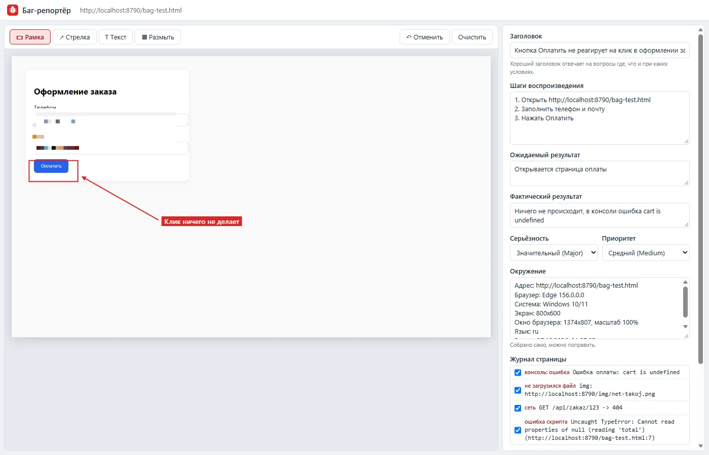

рабочий инструмент · вайб-кодинг
Баг-репортёр (в один клик)
Зачем
Хороший баг-репорт собирается из одних и тех же частей: снимок с отметкой, где ошибка, шаги, ожидаемый и фактический результат, окружение и логи. Руками это пять минут на каждую ошибку, и что-нибудь обязательно забудешь: версию браузера, размер окна или ошибку в консоли, которая объясняет всё. Баг-репортёр собирает это сам по одному нажатию.

Что делает
Собирает сам
- Снимок видимой части страницы
- Адрес, браузер и его версию, систему, размер экрана и окна, масштаб, время
- Ошибки и предупреждения консоли, ошибки скриптов
- Картинки, стили и скрипты, которые не загрузились
- Запросы, которые ответили ошибкой 4xx и 5xx или не дошли
Помогает оформить
- Рамка, стрелка и подпись на снимке, отмена по Ctrl+Z
- Размытие личных данных: телефона, почты, ФИО
- Шаги, ожидаемый и фактический результат, серьёзность и приоритет
- Не даст скопировать репорт без заголовка и фактического результата
- Текст в разметке Jira или в Markdown для YouTrack, GitHub и Trello
Как проверяла
Сделала тестовую страницу оформления заказа с четырьмя ошибками разного типа: ошибка в консоли, запрос с ответом 404, картинка, которой нет, и исключение в скрипте через 50 мс после загрузки. Баг-репортёр поймал все четыре, включая исключение, которое случилось уже после загрузки страницы. Текст для Jira проверила по разметке: шаги идут нумерованным списком, окружение маркированным, логи блоком кода.
На первом снимке редактора нашла свою же ошибку вёрстки: галочки в журнале растянулись на всю ширину. Поправила до публикации.